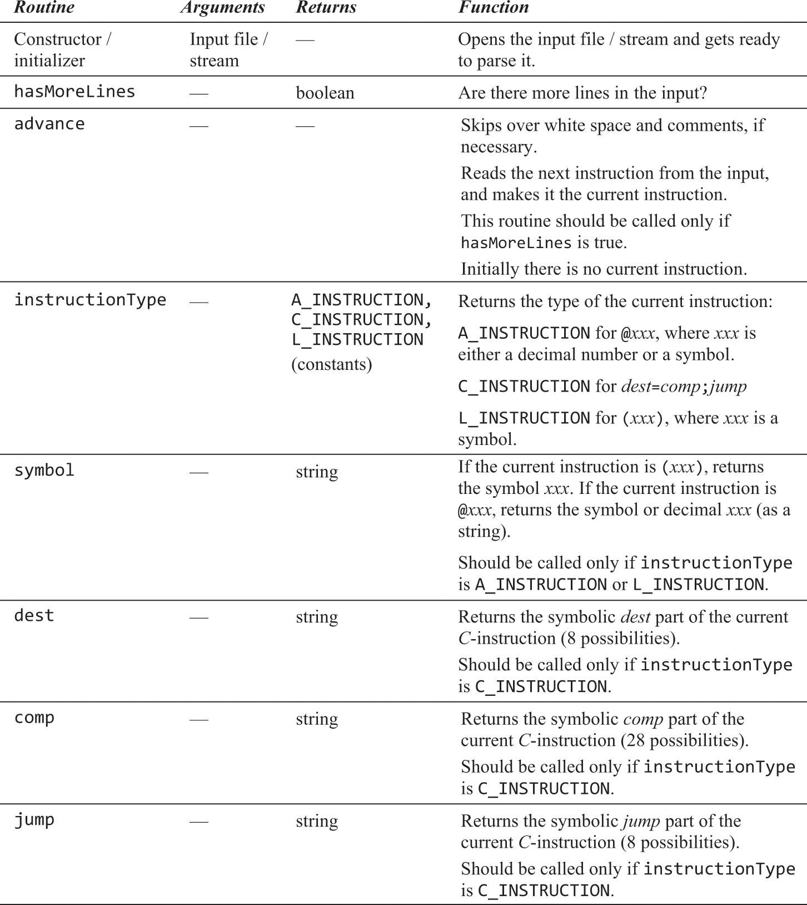
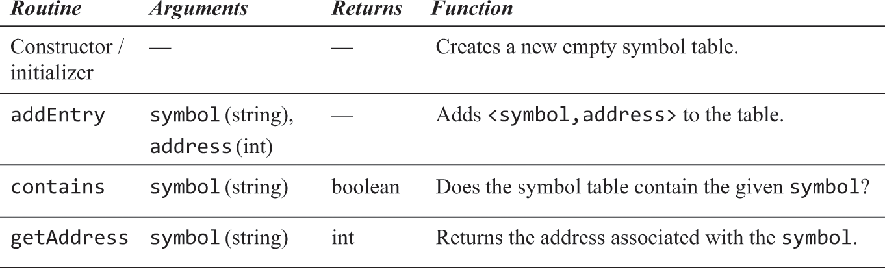
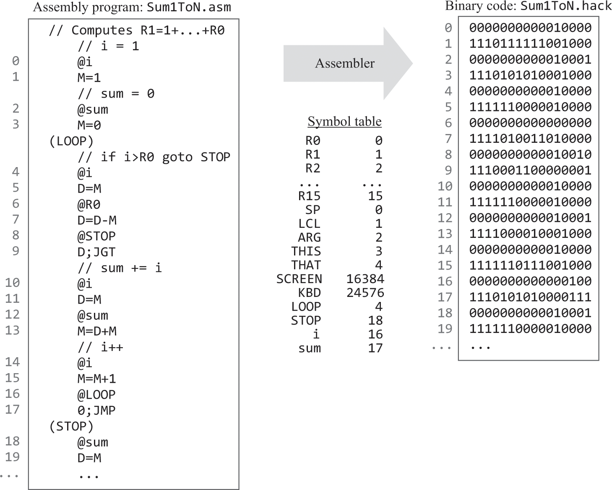

5.1 Assemblers
Background
- Machine languages can be binary or symbolic
- Writing binary machine code is borderline impossible (or at least wildly inefficient)
- This is why we write machine code symbolically and use an assembler to convert it to binary
- And later, a compiler to convert high level languages into assembly code
- The challenge with doing this:
- Extract the programs semantics (what it does) from the source program, using the syntax (how it does it) of the source language
- Re express the program's semantics in the target language, using the syntax of the target language
Translating Assembly to Binary
- Input a stream of assembly instructions and generate an output of binary instructions
- Output is loaded into computer memory and executed
- Assembler must handle instructions and symbols
Handling Symbols
- Needs to read code twice, from start to end to handle jumps
- In first read, assembler builds a symbol table which contains all the symbols in the code
- In second read, assembler handles variable symbols and generates binary code using the symbol table
Predefined Symbols
- Are initialised before the assembler starts and have no special significance on their own
- Include:
- Virtual Registers
R0...R15- Are automatically predefined to RAM addresses
0..15
- I/O pointers
SCREENandKBD- Are automatically predefined to RAM addresses
16384and24576respectively
- VM control pointers
SP, LCL, ARG, THIS, THAT- Predefined to refer to RAM addresses
0-4(they overlap with virtual registers)
- Virtual Registers
User Defined Symbols
- Label Symbols
LOOP, END, etc- Used to label destinations of jump commands
- Declared by the pseudo command
xxx. This directive defines the symbolxxxto refer to the instruction memory location holding the next command in the program
- Variable Symbols
- Any user defined symbol
xxxappearing in an assembly program that is note defined elsewhere using thexxxdirective is treated as a variable - The assembler automatically assigns each variable a unique RAM address, starting at RAM address 16
- Any user defined symbol
- Lowercase for variables and uppercase for labels and predefined symbols!
// Predefined symbols:
// SP, LCL, ARG, THIS, THAT, R0-R15, SCREEN, KBD
// Note: R0-R15 are both registers and memory locations (0-15).
@R0 // Refers to register R0, which is also address 0.
D=M // D gets the value from address 0
@R1 // Refers to register R1, which is also address 1.
M=D+1 // Value at address 1 gets D + 1
// User-defined symbols:
// Labels:
(LOOP_START) // This is a user-defined label named "LOOP_START".
@R2
D=M
D=D-1
@R2
M=D
@END
D;JEQ // If D is zero, jump to the label END.
@LOOP_START
0;JMP // Unconditional jump to LOOP_START
(END) // Another user-defined label named "END".
// Variables:
@myVar // A user-defined variable named "myVar". The assembler will allocate a memory location for this.
M=123
@myVar
D=M
@SCREEN // Predefined symbol referring to the base address of the screen memory map.
M=D // Write the value from myVar to the start of the screen (just for demonstration, doesn't achieve much visually).
How do we achieve this?
- Call
HackAssemblerwith<progname>.asmin the terminal, to outputprogname.hackwith binary code - Consists of three modules:
- Parse module to parse input into instructions and instructions into fields
- Code module for translating fields into binary codes
- Assembler program to drive everything
Parse Module
- Advances through source, skips comments / white space and breaks each symbolic instruction down into it's underlying components

Code Module
- Translates each field created by the parsing module into a 16bit binary code
![[docs/Images/figure_wo_caption_6.2.png]]
Hack Assembler
- Drives previous two modules
- Basic version assumes no symbolic references
- All instructions are of type
@xxxwherexare numbers only - Input file contains no label instructions
- Get name of file from command line arguments
- Constructs objects for modules
- Creates output file
- For each C instruction:
- Enter a loop that iterates through each line and process them:
- Use parse module to break instructions into fields
- Use code module to translate each field
- Concatenate translated binary intro a string of 16 binary chars and writes this string as the next line
- Enter a loop that iterates through each line and process them:
- For each A instruction:
- Translate into binary representation consisting of 16 binary chars and writes this string as the next line
- All instructions are of type
Symbol Table
- Must resolve symbols into actual addresses using a table
- Achieved using a hash table
<key, value>

Implementation
- Using these modules, we can translate assembly into machine code
- Parse instruction into fields
- For each field, generate corresponding bit code
- If instruction contains a symbolic reference, convert symbol into it's numeric value
- Assemble resulting binary into strings of sixteen bits (1 word)
- Write assembled string to output file
Initialisation
- Create an empty symbol table and initialise it with predefined symbols
First Pass
- Go through the source code without generating any machine code
- For each label declaration
LABEL, add the pair<LABEL, n>to the symbol table where n is the location of the next instruction in ROM- Note, we only do this for labels, not variables
- For each label declaration
Second Pass
- Go through the source code again and process each line:
- If the line is a C instruction - translate it into 16 bit instruction according to each field
DEST=COMP;JMP- Note, 2 bits after op code are always
11
- Note, 2 bits after op code are always
- If the line is an A instruction
@xxx:- where
xxxis a number, translatexxxinto 15 bit binary to get the address - where
xxxis a symbol, look it up in the symbol table and proceed as follows:- If found, replace it with its numeric value and complete the instruction
- If not found, then it must represent a new variable:
- Add the pair
<xxx, n>to the symbol table, where n is the next available RAM address (recall, we have predefined symbols up to register 15), and complete the instruction
- Add the pair
- where
- If the line is a C instruction - translate it into 16 bit instruction according to each field

Example

D=0
- C instruction, therefore op code is 1
- computation is =0, therefore a bit is 0 and comp field is 101010
- destination is D only, therefore dest field is 010
- no jump needed, so jump field is 0000
0;JMP
- C instruction, therefore op code is 1
- computation is =0, therefore a bit is 0 and comp field is 101010
- no storing anywhere, therefore dest field is 000
- performing unconditional jump, therefore jump field is 111
A=D&M;JLT
- C instruction, therefore op code is 1
- computation is D&M, therefore a bit is 1 and comp field is 000000
- storing in A, therefore dest field is 100
- performing less than jump, therefore jump field is 100
@BOB (assuming BOB=31)
- A instruction, therefore op code is 0
- Set remaining 15 bits to value of bob (which can be found using the symbol table) = 31
AD=!M
- C instruction, therefore op code is 1
- Computation is !M, therefore comp field is 110001
- Storing in AD, therefore dest field is 110
- No jump, so jump field is 000

- Reads the keyboard code at the time of the first
D=Mcommand and subtracts 48 from it and puts the result innum
- We set the value of
SCREENto be 7, and this in binary is0000...000111, which means it draws the top left most three pixels on the screen black